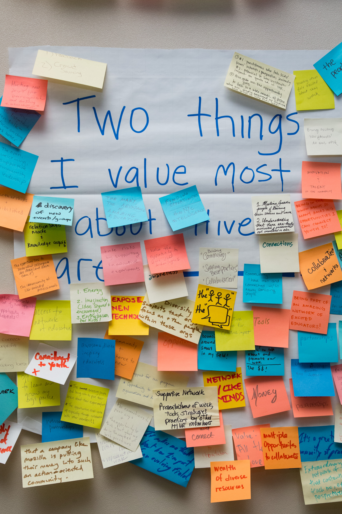

Lead organizations have access to funding to develop, pilot and scale substantial connected learning and web literacy projects with Hive NYC's vetted stakeholders and partners, including NYC DOE Office of Post Secondary Readiness and the Hive Digital Media Learning Fund.
Additionally, through travel grants, Hive NYC’s online portfolio gallery, Mozilla's communication networks and the ability to participate in an extensive program of events, your ideas, concerns and discoveries will be shared and championed on the global stage.
Hive NYC does not itself provide funding, but HQ and lead contributors work in collaboration with community members to broker quality partnerships that secure funding for projects within the connected learning ethos.
Whether you're a small start-up or a storied institution, being a lead contributor gives you the opportunity to influence the future direction of learning in NYC.
Hive NYC enjoys a unique set of powerful assets, allowing lead members to build the kind of trust that:
The programs you pilot as a Hive NYC leader will be subject to extensive exposure in the context of Mozilla's global network. Lead projects exemplify and showcase our work.
See the community page for an overview of existing members.
Hive NYC's non-profit, youth-facing lead organizations have access to the DML Fund.
The Fund's grants support innovative connected learning projects that use digital media technologies to change the way youth learn—and spread the results to a wide audience. The Hive DML Fund's grants are awarded through a competitive process.
Selected projects demonstrate the following characteristics:
For more information and to read about funded projects visit Hive Digital Media Learning Fund and Hive NYC Overview.
To be eligible to receive funding from NYCT, your organization must:
Funds are typically released twice a year at the discretion of NYCT and travel grants are available once a year.
If you feel you or your organization could make a leading contribution to Hive NYC, you are welcome to put yourself forward.
Some information will be required to support your adoption of the lead role:
Once you have your supporting information prepared, submit it for consideration [LINK].